EfficientNetB0
Ensemble member, 300 px
- Parameters
- 4.05 M
- Feature map
- 10×10×1280
- Validation accuracy
- 78.9%
Best validation QWK in the backbone comparison, so it became the base model for versions 1 and 2.
Three convolutional neural networks look at the photo, agree on a stage from 0 to 4, and show where they looked. Everything runs inside your browser, so the image never leaves your device.
An ensemble of EfficientNetB0, B3 and B4, fine-tuned on 3,662 clinician-graded photographs from the APTOS 2019 dataset, predicts one of the five stages.
Grad-CAM heat maps from all three models are averaged to show which parts of the retina influenced the prediction.
The models were converted to ONNX and run with WebAssembly on your own device. No server sees the photograph.
Choose a colour fundus photograph. The three models run on this device and the result appears on the right.
Dataset images are not published on this site because APTOS 2019 is covered by Kaggle's competition rules. Use your own fundus photographs or the test images from the project folder.
APTOS 2019 Blindness Detection (Kaggle): 3,662 colour fundus photographs from Aravind Eye Hospital, India, each graded 0–4 by clinicians.
| Stage | What a clinician sees | Images | Share |
|---|---|---|---|
| 0 No DR | No visible signs of retinopathy | 1,805 | 49.3% |
| 1 Mild NPDR | Microaneurysms only | 370 | 10.1% |
| 2 Moderate NPDR | More microaneurysms, dot and blot haemorrhages, hard exudates | 999 | 27.3% |
| 3 Severe NPDR | Many haemorrhages in all quadrants, venous beading (4-2-1 rule) | 193 | 5.3% |
| 4 Proliferative DR | New fragile vessels that can bleed or detach the retina | 295 | 8.1% |
The data is strongly imbalanced: half of the images show no retinopathy and only 5% are Severe. This is why class balancing was tested and why macro F1 is reported next to accuracy.
The split is stratified by stage with a fixed seed (42), and it is made before any augmentation, so no test image or copy of one can leak into training. Every design decision was made on the validation set; the test set was used once per version.
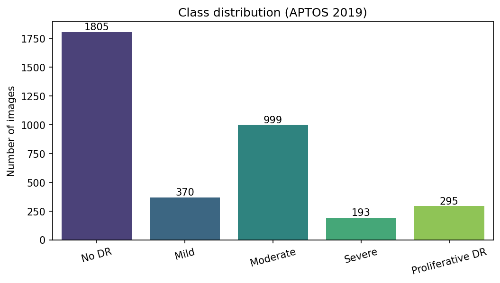
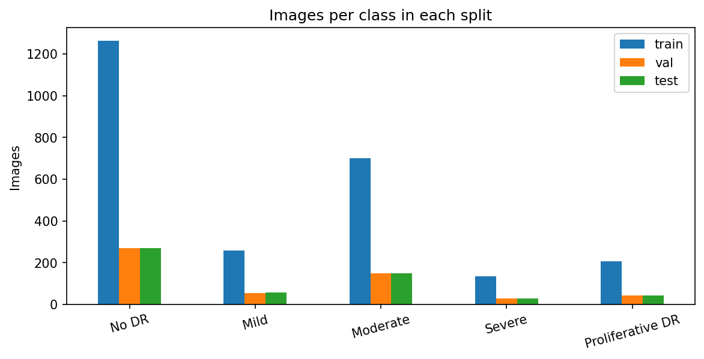
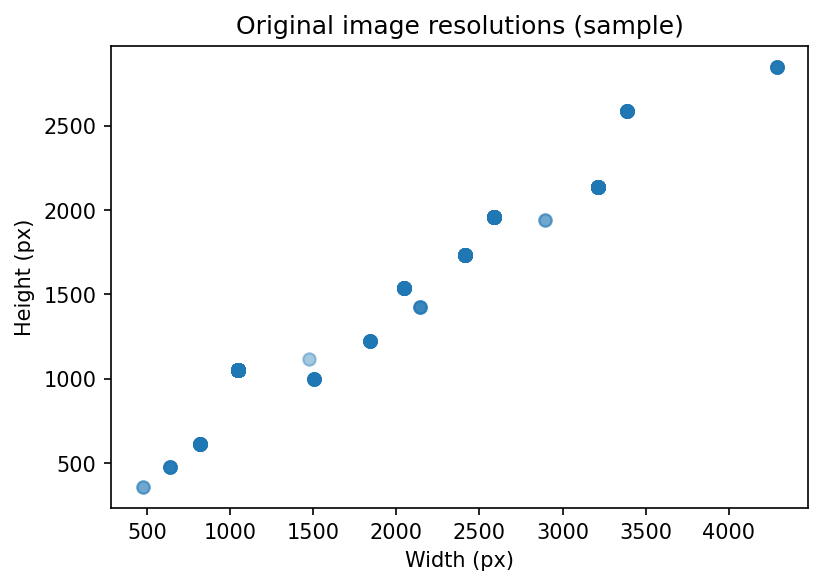
From a raw photograph to a stage prediction. Each step was tested with full training before it was kept.
The black border around the retina is cropped, the image is padded to a square and resized with area interpolation to 300 px (B0) or 380 px (B3, B4).
Three options were compared: the raw image, median denoising with CLAHE contrast enhancement on the LAB lightness channel and unsharp-mask edge enhancement, and Ben Graham's local-average subtraction. Normalisation happens inside each EfficientNet.
Random flips, 360° rotation, zoom, translation, brightness and contrast are applied on the fly. A retina has no natural up direction and cameras differ in exposure, so these changes create realistic new examples.
Balanced class weights, square-root weights and oversampling of rare stages were compared. Oversampling was kept.
Three fine-tuned CNNs predict stage probabilities, which are averaged. Grad-CAM shows the regions that drove the prediction.
| Preprocessing | Validation QWK | Kept |
|---|---|---|
| Raw (crop and resize only) | 0.861 | Yes |
| CLAHE + unsharp mask | 0.858 | No |
| Ben Graham filter | 0.829 | No |
Enhancement did not help here: EfficientNet already normalises its input and learns its own contrast features, while strong filtering changed colours the pretrained network relies on. The enhancement code stays in the project and in the desktop app.
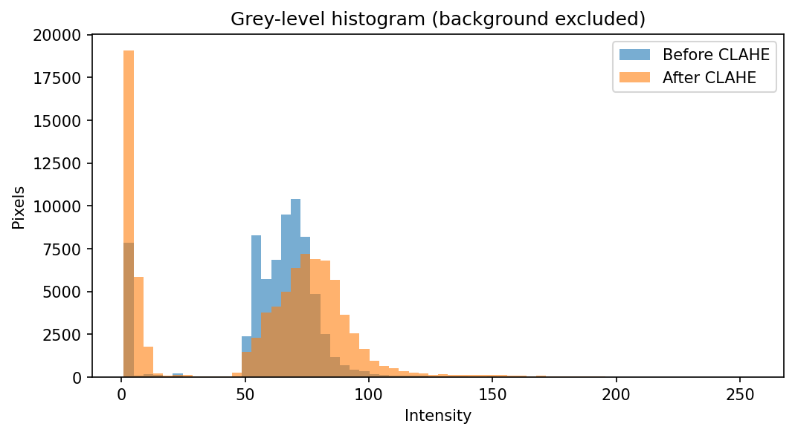
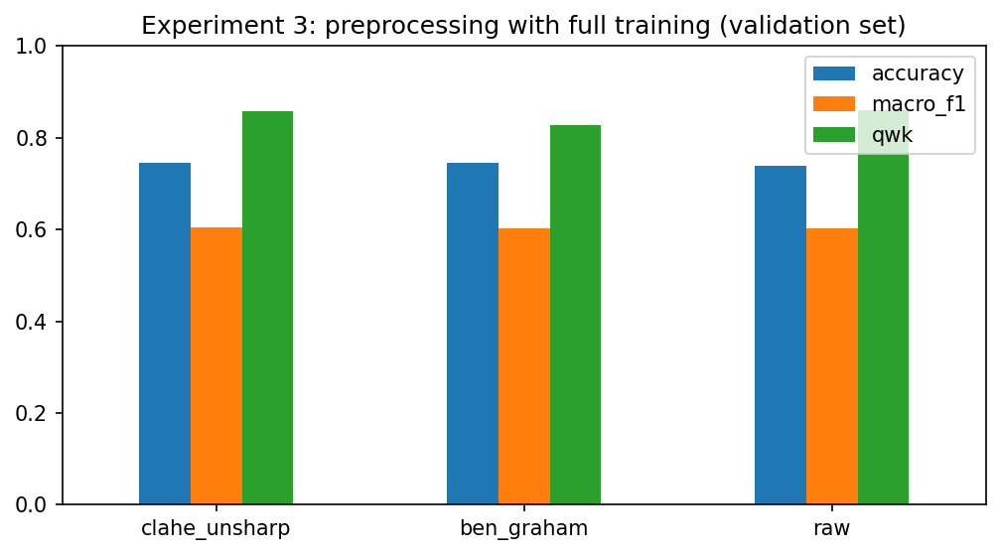
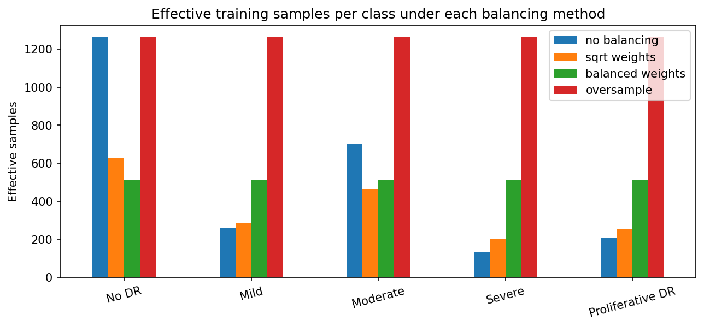
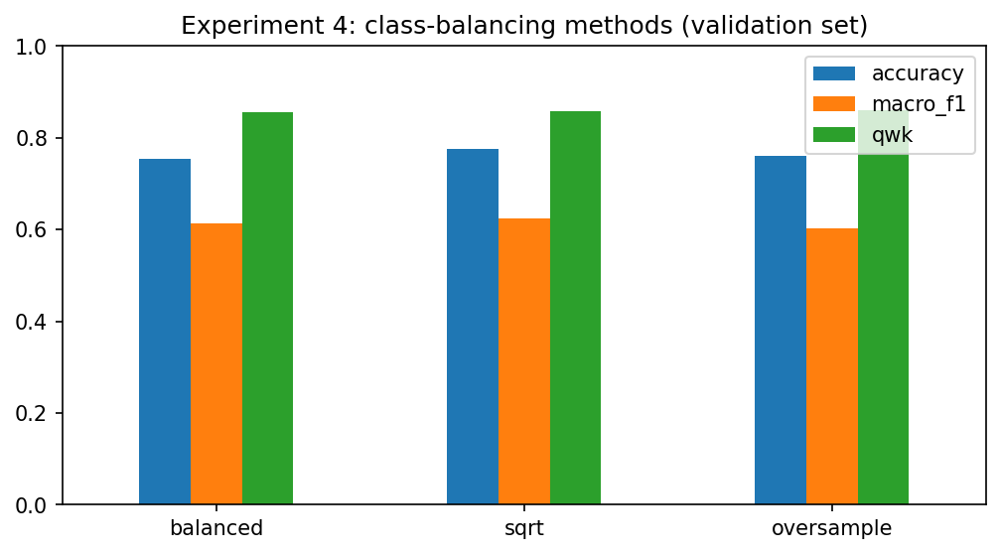
All models are convolutional neural networks pre-trained on ImageNet and fine-tuned on APTOS 2019. Five were compared; three form the final ensemble.
Ensemble member, 300 px
Best validation QWK in the backbone comparison, so it became the base model for versions 1 and 2.
Ensemble member, 380 px
Higher resolution shows smaller lesions such as microaneurysms.
Ensemble member, 380 px
The deepest member, trained with a different seed to add diversity.
Compared, not selected
Lower validation QWK than EfficientNetB0 while being much larger.
Compared, not selected
The smallest model, but the lowest validation QWK of the four compared.
Each member gets the photograph at its own input size. The same head sits on every backbone: global average pooling, dropout 0.4, a 256-unit ReLU layer with L2 regularisation, dropout 0.4 and a 5-way softmax. The three members' probabilities are averaged. Every combination of trained models, with and without test-time augmentation, was scored on the validation set; this one scored best (validation accuracy 81.2%).
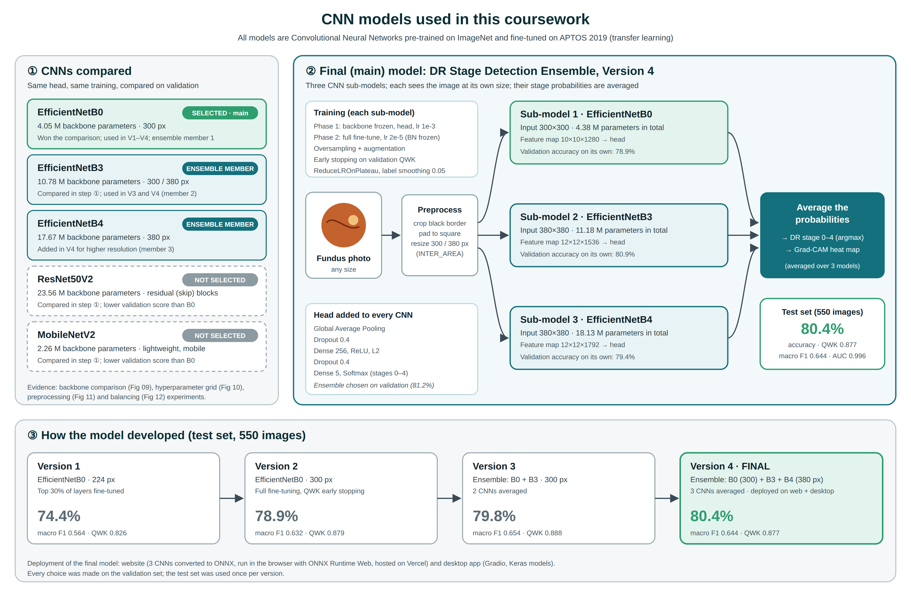
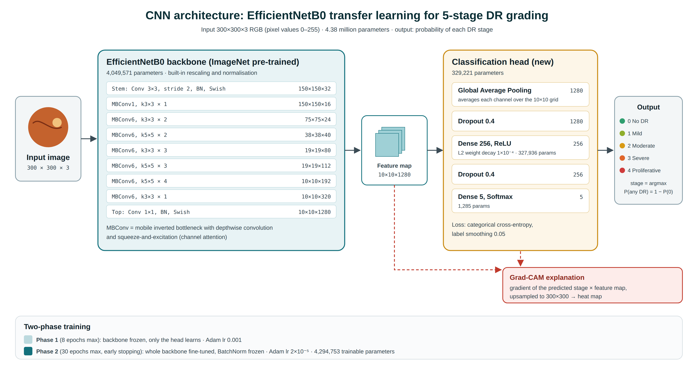
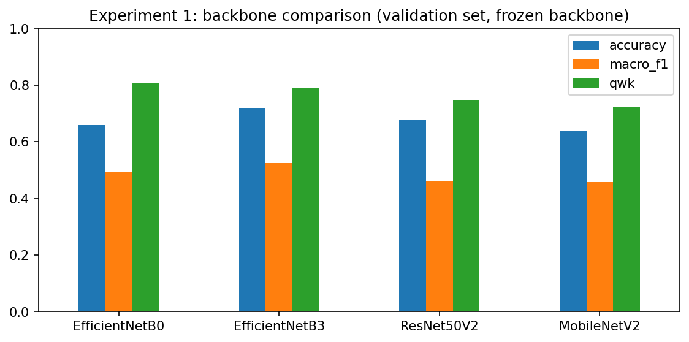
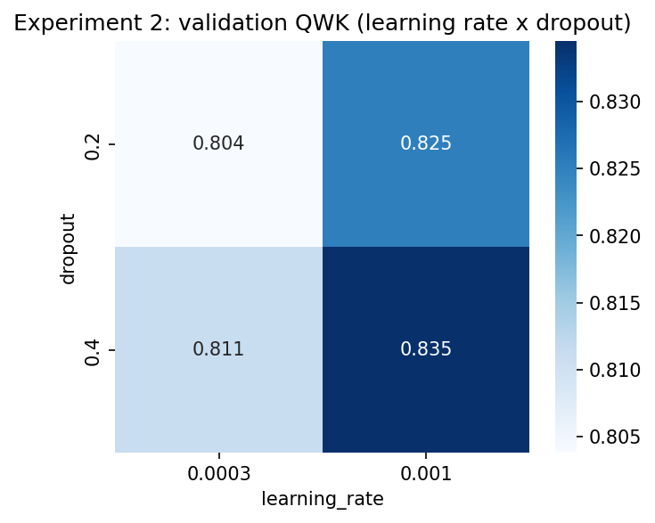
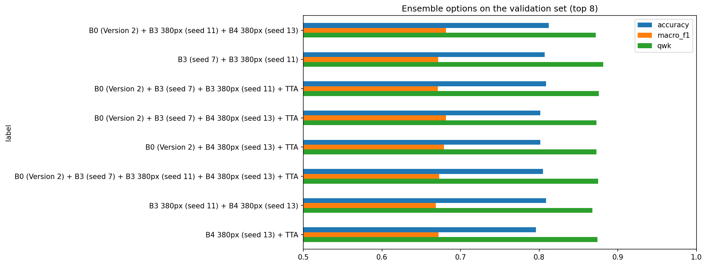
Trained on Kaggle with an NVIDIA T4 GPU. Every random seed is fixed so the runs can be repeated.
The ImageNet backbone is frozen and only the new head learns, with a learning rate of 0.001. This protects the pretrained features from large early gradients.
The whole backbone is unfrozen and trained at 2 × 10⁻⁵, with BatchNorm layers kept frozen so their statistics stay stable on small batches.
| Technique | Setting | Why |
|---|---|---|
| Validation QWK callback | Computed after every epoch | QWK is the official APTOS metric and rewards near-miss grades |
| Early stopping | On validation QWK, best weights restored | Stops before the model overfits |
| Model checkpoint | Best validation QWK saved | Keeps the best epoch, not the last |
| ReduceLROnPlateau | Lower the learning rate when progress stalls | Finer steps near the optimum |
| Label smoothing | 0.05 | Graders disagree on borderline images |
| Dropout and L2 | Dropout 0.4, L2 on the dense layer | Less overfitting on a small dataset |
| Hyperparameter grid | Learning rate × dropout | Chosen on validation: 0.001 and 0.4 |
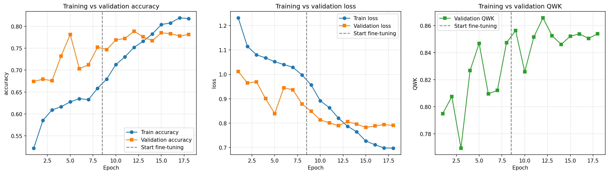
Measured once on 550 held-out test images that were never used for training or for any decision.
Test accuracy per version; the bars start at 70%. Version 4 has the best accuracy and the best Mild-stage recall. Version 3 has a slightly higher macro F1 (0.654) and QWK (0.888), so the last step is a trade-off rather than a gain on every metric.
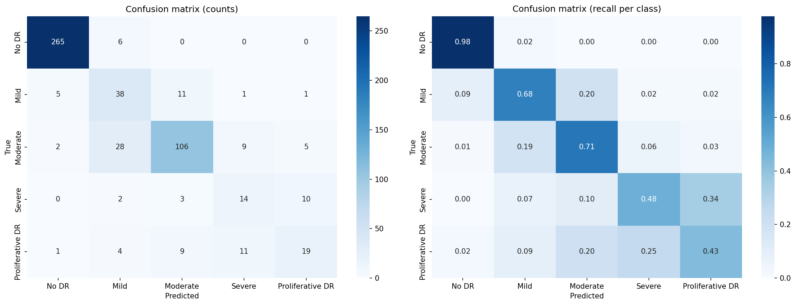
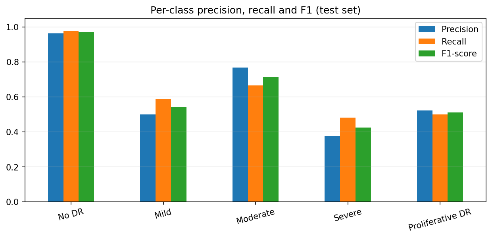
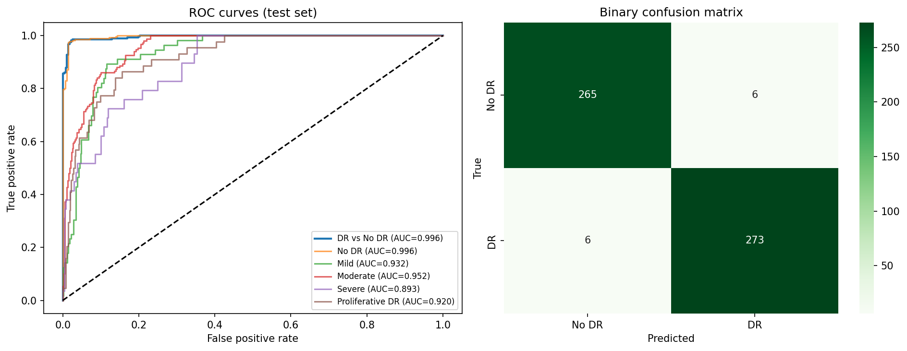
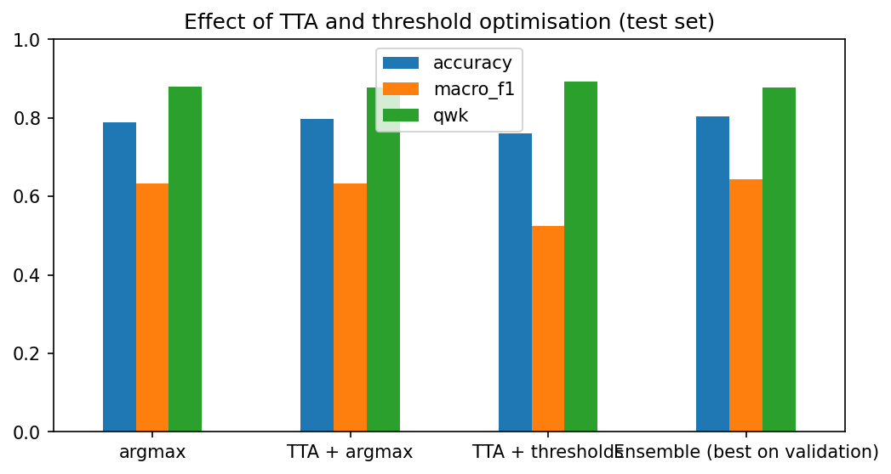
No DR and Moderate are recognised well. Mild, Severe and Proliferative are harder: they have few training examples and their borders are subtle, and clinicians also disagree on them. Most mistakes land on a neighbouring stage, which is why the quadratic weighted kappa (0.877) is high even though exact accuracy is 80%. For screening, what matters most is separating any DR from no DR, and there the ensemble reaches 97.8% sensitivity and 97.8% specificity.
A grade is only useful to a clinician if they can check why it was given.
For each model, the gradient of the predicted stage is taken with respect to the last convolutional feature map. Averaging the gradient per channel gives each channel a weight; the weighted sum of the channels, with negatives removed, is the heat map. The three maps are resized to the same size and averaged. In the browser, the gradients through the dense head are derived analytically, so no deep-learning framework is needed.
Red and yellow areas influenced the prediction most, blue areas least. On diseased eyes the heat should sit on haemorrhages, exudates or new vessels. Heat on the optic disc or the image edge means the model also uses normal anatomy, which is a known limitation and a reason to keep a clinician in the loop.
Photographs are processed on the user's own device and are never uploaded. The dataset images are not redistributed on this site.
All training images come from one hospital network in India, with its own cameras and population. Accuracy may be lower on other populations, cameras or image quality.
Stages were graded by clinicians who do not always agree, especially between neighbouring stages. The model inherits that uncertainty.
Severe (29 test images) and Proliferative (44) have few examples, so their recall is lower and their measured scores are less certain.
Diabetic Retinopathy Stage Detection using CNN transfer learning. Computer Vision coursework, BSc (Hons) Computer Science, National Institute of Business Management.
| Training | Python, TensorFlow and Keras, scikit-learn, OpenCV, NumPy, pandas, Matplotlib on Kaggle |
| Website | HTML, CSS, JavaScript, ONNX Runtime Web (WebAssembly), hosted on Vercel |
| Desktop app | Python and Gradio |
| Conversion | tf2onnx and ONNX |